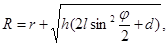
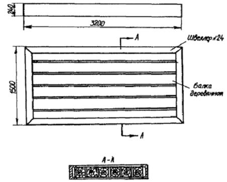
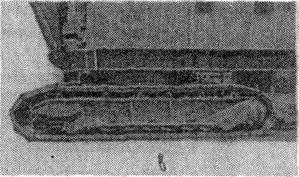

ВЕДОМСТВЕННЫЕ СТРОИТЕЛЬНЫЕ НОРМЫ
ПРАВИЛА ТЕХНИКИ
БЕЗОПАСНОСТИ
ПРИ ЭКСПЛУАТАЦИИ СТРЕЛОВЫХ
САМОХОДНЫХ КРАНОВ
ВСН 274-88
Минмонтажспецстрой СССР
Министерство монтажных и специальных
строительных работ СССР
МОСКВА 1989
РАЗРАБОТАНЫ ВНИИМонтажспецстроем (канд. техн. наук М.М. Левин)
ВНЕСЕНЫ И ПОДГОТОВЛЕНЫ К УТВЕРЖДЕНИЮ Главным научно-техническим управлением Минмонтажспецстроя СССР
С введением в действие настоящих ВСН утрачивает силу «Инструкция по технике безопасности при эксплуатации стреловых самоходных кранов» ВСН 274-74/Минмонтажспецстроя СССР
СОГЛАСОВАНЫ с ВЦНИИОТ ВЦСПС
|
Министерство монтажных и специальных строительных работ СССР Минмонтажспецстрой СССР |
Ведомственные строительные нормы |
ВСН 274-88 Минмонтажспецстрой СССР |
|
|
Правила техники безопасности при эксплуатации стреловых самоходных кранов |
|||
|
Взамен ВСН 274–74 Минмонтажспецстрой СССР |
Настоящие ведомственные строительные нормы разработаны как дополнение к «Правилам устройства и безопасной эксплуатации грузоподъемных кранов», утвержденным Госгортехнадзором, и СНиП III-4-80 «Техника безопасности в строительстве».
ВСН содержат требования безопасности при монтаже технологического оборудования и конструкций с помощью стреловых самоходных кранов на гусеничном и пневмоколесном ходу грузоподъемностью до 400 т.
ВСН предназначены для инженерно-технических работников, разрабатывающих проекты производства работ (ППР) и технологические карты, а также для крановщиков, стропальщиков и лиц, ответственных по надзору, за исправное состояние кранов и безопасное производство работ по перемещению грузов кранами.
1.1. Эксплуатировать стреловые самоходные краны (далее краны) на монтаже технологического оборудования и конструкций следует в соответствии с ППР или технологической картой, разработанными специализированной организацией с полным отражением в них требований безопасности, предусмотренных «Правилами устройства и безопасной эксплуатации грузоподъемных кранов» Госгортехнадзора (далее Правила), СНиП III-4-80 «Техника безопасности в строительстве» Госстроя СССР (далее СНиП III-4-80) и настоящими ВСН.
1.2. Техника безопасности при организации площадки для эксплуатации кранов, перед началом производства работ с кранами (включая их демонтаж для перемещения по дорогам, перемещение своим ходом, на буксире или на транспортных средствах к месту производства работ, монтаж и установку на площадке), во время и по окончании работы кранов, электро- и пожарная безопасность и меры безопасности в аварийных ситуациях должны отвечать требованиям Правил, СНиП III-4-80 и настоящих ВСН.
|
Внесены Главным научно-техническим управлением Минмонтажспецстроя СССР |
Утверждены Минмонтажспецстроем СССР 31 октября 1988 г. |
Срок введения с 1 апреля 1989 г. |
1.3. При предоставлении монтажным организациям кранов в аренду без обслуживающего персонала (крановщиков) надзор за содержанием и безопасной эксплуатацией должна осуществлять организация - владелец кранов - управление механизации (УМ).
1.4. Приказ о назначении лица, ответственного за исправное состояние кранов, должен быть издан организацией-владельцем, на балансе которой находится кран, или арендатором, если при передаче кранов в аренду ответственность за их содержание в исправном состоянии возлагается на арендатора.
1.5. В УМ, имеющих более 50 кранов различных моделей и типоразмеров, по согласованию с органом технадзора, ответственные за исправное состояние кранов могут быть назначены раздельно по группам кранов: гусеничным, пневмоколесным, автомобильным, на спецшасси автомобильного типа и т.п.
1.6. Назначение крановщиков должен осуществлять владелец кранов или арендатор (монтажное управление) при предоставлении кранов в аренду без крановщиков.
Если инструкцией завода-изготовителя или местными условиями предусматриваются помощники крановщиков, последние назначаются владельцем или арендатором крана.
1.7. При необходимости продолжить срок эксплуатации крана по истечении срока службы необходимо получить от органа технадзора разрешение на пуск его в работу на основании результатов внеочередного полного технического освидетельствования (если со дня предыдущего такого же освидетельствования прошло более 6 мес.), проведенного владельцем крана.
2.1. Подъездные пути и дороги к монтажной площадке должны быть сооружены до начала строительно-монтажных работ и обеспечивать свободный доступ транспортных средств и кранов к монтируемым объектам.
2.2. Монтажная организация должна принять у специализированной строительной организации, ответственной за устройство подъездных путей и дорог к монтажной площадке, указанные пути и дороги. Эту приемку следует производить по акту в соответствии с рекомендуемым приложением 1. Акт сдачи оснований монтажной площадки и подъездных путей к ней следует предъявлять организации - владельцу кранов до установки на них кранов.
Примечание. Строительная организация должна принять на себя ответственность за содержание оснований на весь период производства монтажных работ, если в акте сдачи не оговорено, что ответственность за содержание подъездных путей и дорог к монтажной площадке и основания площадки возлагается на монтажную организацию.
2.3. При приемке основания площадки под краны лицо, ответственное за безопасное производство работ по перемещению грузов кранами, или ИТР, назначенный руководством монтажной организации должно удостовериться, что основание площадки:
способно выдерживать нагрузки, МПа: до 0,4 - 0,5 - для кранов грузоподъемностью до 25 т, 0,6 - 0,7 - свыше 25 до 63 т; 0,8 - 1,0 – 100 - 160 т и 1,2 - 1,8 - до 400 т;
обеспечивает необходимые для безопасной эксплуатации гусеничных и пневмоколесных кранов нормы ровности (см. п. 2.5 и приложение 1);
устойчиво к влиянию местных климатических факторов (не теряет несущей способности при обильных осадках, сохраняет свою пригодность при сильных морозах или жаре и т.п.);
имеет необходимые по нормам поперечный и продольный профили, соответствующие требованиям п. 2.5;
имеет водоотвод;
имеет соответствующие требованиям ППР ширину и толщину улучшенного поверхностного слоя, если таковой предусмотрен.
2.4. Земляное полотно, служащее основанием для покрытия (если оно предусмотрено), должно быть очищено от строительного мусора, льда, снега, посторонних предметов и растительного слоя почвы. Площадку земляного полотна необходимо спланировать в продольном и поперечном направлениях с уклоном в сторону водостока 0,008 - 001.
Илистые грунты, жирные глины, засоленные грунты и торф для возведения земляного полотна не допускаются.
Разрешается устраивать земляное полотно из насыпного грунта или из насыпного и основного грунтов.
2.5. Поперечный и продольный уклоны площадок под краны не должны превышать значений, указанных в инструкции по монтажу и эксплуатации для кранов с конкретным стреловым исполнением (с минимальной по длине стрелой или увеличенной длиной с помощью вставок или путем выдвижения), для подъездных путей продольный уклон не должен превышать 0,09. Ширина проезжей части подъездных путей должна быть не менее 4 м (для кранов грузоподъемностью более 40 т - не менее 4,5 м; более 100 т - не менее 6 м), ширина обочин - не менее 0,75 м. Поверхность площадки и подъездных путей должна быть ровной, без впадин, волн и бугров (см. приложение 1). Просвет под рейкой длиной 3 м в продольном и поперечном направлениях не должен превышать 30 - 50 мм.
Прочность основания площадок и путей следует проверять любым современным методом, в том числе ускоренным методом зондирования, приведенным в рекомендуемом приложении 2.
2.6. С оснований проездов, проходов и монтажных площадок весной, во время таяния, необходимо своевременно скалывать лед и убирать снег. Для участков дорог и площадок, подверженных действию паводковых вод, должен быть составлен генподрядной организацией, ответственной за содержание дорог и оснований площадок, план мероприятий с указанием перечня и объема работ, потребности в рабочей силе, материалах и транспортных средствах.
2.7. Монтажные площадки и подъездные пути к ним в необходимых случаях, отраженных в ППР или технологической карте, оборудуют инвентарными настилами из железобетонных, металлических, деревометаллических, деревянных и других плит и щитов (см. рекомендуемое приложение 3).
3.1. Безопасную эксплуатацию кранов при подъеме и перемещении оборудования и конструкций обеспечивают наличие, техническое состояние и правильное использование размещаемых на кране и вне его приборов и устройств безопасности, предусмотренных Правилами, СНиП III-4-80 и настоящими ВСН.
3.2. Установленный в кабине крана указатель угла наклона должен обеспечивать контроль не менее двух значений угла, в том числе наибольшего, указанного в паспорте крана или в инструкции завода-изготовителя (см. рекомендуемое приложение 4).
3.3. Эксплуатацию кранов при подъеме и перемещении тяжелого и крупногабаритного оборудования и конструкций необходимо проводить при обязательном контроле угла отклонения грузовых канатов от плоскости подъема либо c помощью устройств1), закрепляемых на кране, либо с помощью средств, размещаемых вне крана (cм. рекомендуемое приложение 5).
1 Установку указанных средств (приборов, устройств) на краны производят по мере их выпуска.
3.4. Безопасный подъем и перемещение оборудования и конструкций краном c башенно-стреловым оборудованием (БСО) должен обеспечивать анемометр, отвечающий требованиям СНиП III-4-80.
3.5. Безопасный подъем и перемещение оборудования и конструкций краном c БСО должны обеспечивать средства контроля вылета маневрового гуська: либо устройства1, размещаемые на кране, либо устройства для измерения длины (например, рулетка и т.п.) вне его (см. рекомендуемое приложение 6).
3.6. Безопасную эксплуатацию кранов при подъеме и перемещении тяжелого и крупногабаритного оборудования и конструкций должны обеспечивать ограничители и указатели поворота поворотной платформы относительно ходовой части, находящиеся вне крана или на нем (см. рекомендуемое приложение 7).
3.7. Положение крана в горизонтальной плоскости следует обеспечивать с помощью средств для привязки крана к заданной в ППР или технологической карте точке на местности, ограничителей зоны работы крана, которые выполняют устройствами1), размещаемыми на кране или вне его. К последним относятся ограждения, вешки, указатели, реперы и т.п. (см. рекомендуемое приложение 8).
3.8. Безопасную эксплуатацию кранов в зоне воздушной ЛЭП должны обеспечивать средства, размещаемые на кране (в том числе прибор, включающий звуковой сигнал оповещения о приближении стрелы к находящимся под напряжением проводам электрической сети или линии электропередачи1), или вне его - ограждения, указатели и т.п. (рекомендуемое приложением 9), или те и другие.
1 Установку указанных средств (приборов, устройств) на краны производят по мере их выпуска.
3.9. Безопасную эксплуатацию кранов на грунтовых основаниях должны обеспечивать средства контроля прочности грунтов и ровности поверхности основания в соответствии с требованиями п. 2.5 настоящих ВСН (см. приложение 2).
4.1.1. При движении крана по дорогам должны быть обеспечены безопасность сопровождающего машину персонала, сохранность машины, встречающихся на пути следования предметов, а также покрытия дороги.
4.1.2. При перемещении гусеничных кранов самоходом покрытие дороги должно отвечать требованиям проезда по ней машин с гусеничным ходом. Прочность грунтового основания, МПа: для кранов грузоподъемностью до 40 т не менее 0,25 - 0,3, до 100 т - 0,35 - 0,4, выше 100 т - 0,5 - 1,0. Ширина проезжей части дорог для этих кранов не менее 4, 4,5 и 6 м соответственно.
Разрешается проезд по бетонным, выложенным булыжником, плитами и т.п. дорогам. По асфальтированному покрытию проезд кранов грузоподъемностью более 25 т запрещается: необходимо принять специальные меры - производить подсыпку грунта (песка и т.п.), применять подстилающие устройства и т.д.
4.1.3. Перед движением самоходом с объекта на объект краны необходимо перевести в транспортное положение, отвечающее требованиям движения и транспортным габаритам и указаниям инструкции завода-изготовителя.
Перед началом движения необходимо:
проверить действие звуковых сигналов и освещения наружного: (фары, стоп-сигналы, сигналы поворота) и внутреннего (в кабине);
проконтролировать работу тормоза механизма передвижения;
застопорить тормоз механизма поворота;
проверить заправку систем питания, охлаждения и смазки, работу двигателя;
осмотреть и проверить стреловую лебедку, удерживающую рабочее оборудование в транспортном положении;
проверить давление в шинах (должно соответствовать транспортному режиму без груза);
проконтролировать рулевое управление или устройство для разворота ведомых колес;
проверить крепление выносных опор и техническое состояние шин.
Маршрут движения пневмоколесного крана с нагрузкой на ось более 120 кН необходимо предварительно согласовать с Госавтоинспекцией.
4.1.4. При буксировании пневмоколесного крана:
скорость движения не должна по горизонтальной дороге превышать 25 км/ч, вблизи строящихся объектов - 10 км/ч, на уклонах и поворотах - 5 км/ч;
стрела должна быть установлена по продольной оси при направлении оголовка в сторону ведущего моста;
при длительном транспортировании (несколько часов) следует систематически проверять состояние ходового оборудования. Степень затяжки гаек крепления колес и надежность работы тормоза следует проверить после преодоления первых (двух-трех) километров пути, а затем через каждые 20 - 25 км;
соединять кран с буксиром следует через буксировочные крюки и другие буксирные приспособления или раму крана. Буксировочный канат должен быть длиной 4 - 6 м.
4.2.1. После доставки крана на монтажную площадку на автотранспортных средствах, железнодорожным или водным транспортом следует, если это необходимо в соответствии с инструкцией завода-изготовителя, смонтировать кран, а по окончании работ, если это необходимо, - демонтировать.
4.2.2. Монтаж и демонтаж крана должна производить с участием крановщика под руководством назначенного ИТР, отвечающего за соблюдение указанной в ППР и инструкции завода-изготовителя технологии монтажа (демонтажа) и правил техники безопасности, квалифицированная бригада рабочих, предварительно ознакомленная с инструкцией по монтажу и имеющая допуск к работе на высоте. Монтажом и демонтажем большегрузных кранов (грузоподъемностью 100 т и выше) должно руководить лицо, ответственное за исправное состояние кранов.
4.2.3. Монтаж и демонтаж крана разрешается производить, как правило, только в светлое время суток. Ночью указанные операции разрешается производить только при необходимости устранения последствий аварии или при других аналогичных ситуациях; при этом горизонтальная и вертикальная освещенность площадки должна быть не менее 25 лк.
4.2.4. Производить монтаж (демонтаж) при температуре ниже минус 20° и ветре силой более 5 баллов для кранов с обычными стрелами и более 3 баллов (если эти данные не оговорены в инструкции завода-изготовителя) для кранов с удлиненными стрелами и БСО запрещается.
4.2.5. При монтаже (демонтаже) производить на монтажной площадке какие бы то ни было работы, не относящиеся к данному процессу, запрещается.
4.2.6. При выполнении монтажных (демонтажных) работ необходимо соблюдать следующие требования:
отцеплять элементы устройства только после их надежного закрепления на ранее смонтированных конструкциях;
состояние монтажных канатов и способы их закрепления должны отвечать требованиям Правил;
временные опоры в виде шпальных клеток и козел должны быть выполнены так, чтобы исключалось падение опоры, железобетонных плит и блоков, уложенных на якори;
при смене колес кранов на пневмоходу следует выполнять разработанные в данной организации под руководством ответственного за исправное состояние кранов специальные требования по безопасному выполнению указанной операции (если эти требования не оговорены в инструкции завода-изготовителя);
при сборке основных конструкций, различных приспособлений или вспомогательных элементов необходимо соединять и закреплять их полным комплектом крепежных деталей. Временное соединение, не обеспечивающее нормальной устойчивости и прочности конструкции в соответствии с техническими условиями на монтаже, запрещается;
монтировать кран можно только на горизонтальной спланированной и укатанной площадке, исключающей перекос машины при ее сборке: уклон не должен превышать (если другие данные не оговорены в инструкции завода-изготовителя) 3°, прочность грунта должна быть не менее 0,3 - 0,4 МПа; для кранов грузоподъемностью 100 т и выше прочность грунта не менее 0,6 - 1,0 МПа при уклоне не более 2°. Металлические конструкции крана необходимо укладывать на деревянные подкладки во избежание повреждений или деформаций, которые могут возникнуть при их опирании непосредственно на грунт.
4.2.7. Все ответственные соединения, состояние металлоконструкций, надежность тормозов, правильность запасовки канатов, схемы и соединения электропроводки, сохранность сварных и болтовых соединений и т.п. необходимо, как правило, проверять на монтажной площадке до подъема рабочего оборудования крана в рабочее положение.
4.2.8. При монтаже или демонтаже стрелы, связанном с ее удлинением (укорочением), запрещается ходить, работать под стрелой или прислоняться к ней; при необходимости удаления пальцев, соединяющих секции стрелы, следует пользоваться жесткими стержнями нужной длины.
Запрещается поднимать собранную стрелу до установки всех пальцев. До подъема собранной стрелы следует еще раз определить силу ветра и убедиться, что она не превышает допустимую.
4.3.1. Краны следует устанавливать и перемещать на площадках и подъездных путях, основания которых отвечают требованиям раздела 3 настоящих ВСН, приложения 1 и инструкции завода-изготовителя. Ответственность за правильную установку кранов возлагается на лицо, ответственное за безопасное производство работ по перемещению грузов кранами. Если при приемке площадки установлено соответствие ее основания вышеуказанным требованиям, то определять прочность грунта и проводить другие мероприятия по подготовке основания перед каждой установкой крана необязательно, кроме случаев, изложенных в п. 4.3.2 ВСН.
4.3.2. При неблагоприятных погодных условиях накануне или при работе кранов (ливневые дожди, сильный снегопад и т.д.), могущих привести к снижению прочности основания площадки, следует провести мероприятия по подготовке основания и прежде всего удостовериться в достаточности его прочности для установки кранов (см. приложение 2). Для этого необходимо выборочно определить прочность грунта в соответствии с п. 2.5. Число мест определения допустимо уменьшить в 2 - 3 раза.
4.3.3. При недостаточной прочности грунтового основания грунт необходимо уплотнить или применять подстилающие устройства (см. приложение 3).
При использовании в качестве подстилающих устройств бревенчатых щитов последние должны иметь сквозные болтовые соединения, соединяющие бревна в единое целое.
Опорная площадь подстилающего устройства под выносную опору крана на пневмомашинах должна превышать площадь опорной плиты выносной опоры в 3 и более раз. При использовании под опору двух и более подстилающих устройств последние должны быть вплотную уложены друг к другу (черт. 1). Укладывать подстилающие устройства необходимо горизонтально для обеспечения прямого угла между осью цилиндра выносной опоры и опорной плитой.
4.3.4. Если необходимо под выносную опору уложить не одно- а многослойное подстилающее устройство, необходимо убедиться в устойчивости устройства против разрушения при передаче на него статических и динамических нагрузок.
Использование двух подстилающих устройств под выносную опору крана
Черт. 1
4.3.5. Запрещается устанавливать какие бы то ни было опорные приспособления под балками выносных опор внутри площадки, ограниченной опорными плитами выносных опор.
4.3.6. Угол наклона крана, определяемый как сумма углов уклона площадки и угла осадки, вызванной неравномерной деформацией грунта под краном, не должен превышать значения, указанного в паспорте и инструкции завода-изготовителя.
4.3.7. Угол наклона крана должен быть определен лично лицом, ответственным за безопасное производство работ по перемещению грузов кранами, или кем-либо по его указанию до установки крана на площадке; при несоответствии его норме основание площадки следует соответствующим образом подготовить (выровнять, уплотнить и т.д.).
Расчетные значения наибольших углов осадки для глинистых (глина, суглинок) грунтов основных типоразмеров гусеничных кранов со стреловым и башенно-стреловым оборудованием при максимальном нагружении и модуле деформации грунта 10 МПа (что примерно соответствует прочности грунта 0,5 - 0,6 МПа) приведены в табл. 1 и 2. Углы осадки для любых других значений нагрузки на краны и модуля деформации определяют исходя из того, что между указанными тремя параметрами имеет место пропорциональная зависимость: угол осадки увеличивается при увеличении нагрузки и уменьшении модуля деформации.
Таблица 1
|
Длина стрелы, м |
Угол осадки крана, град |
Модель крана |
Длина стрелы, м |
Угол осадки крана, град |
|
|
МКГ-16М |
10 |
0,8 |
СКГ-63/100 (без дополнительного противовеса) СКГ-631 |
15 |
1,3 |
|
18 |
0,5 |
30 |
1,1 |
||
|
26 |
0,5 |
35 |
0,9 |
||
|
РДК-25 |
12,5 |
1,0 |
ДЭК-631 |
18 |
1,3 |
|
22,5 |
0,8 |
30 |
1,0 |
||
|
32,5 |
0,6 |
42 |
0,6 |
||
|
МКГ-25БР |
13,5 |
0,8 |
КС-8161 |
20 |
1,3 |
|
23,5 |
0,6 |
КС-8165 |
30 |
1,1 |
|
|
33,5 |
0,5 |
СКГ-100 |
40 |
0,7 |
|
|
СКГ-40/63 (без дополнительного противовеса) СКГ-401 |
15 |
1,2 |
МКГС-100 |
22 |
1,2 |
|
20 |
1,0 |
29 |
1,0 |
||
|
30 |
0,8 |
50 |
0,8 |
Таблица 2
|
Длина стрелы, м |
Длина маневрового гуська, м |
Угол осадки крана, град |
Модель крана |
Длина стрелы, м |
Длина маневрового гуська, м |
Угол осадки крана, град |
|
|
МКГ-25БР |
18,5 |
10; 20 |
0,6; 0,4 |
КС-8161 |
25 |
15; 30 |
1,0; 0,8 |
|
23,5 |
10; 20 |
0,6; 0,4 |
КС-8165 |
35 |
15; 24; 29 |
0,8; 0,7 |
|
|
28,5 |
10; 20 |
0,4; 0,4 |
СКГ-100 |
45; 29 |
0,5 |
||
|
СКГ-40/63 |
25 |
10; 15; 20 |
0,7 |
19; 26; 33; 40 |
0,8 |
||
|
СКГ-401 |
30 |
10; 15; 20 |
0,7 |
МКГС-100 |
43 |
19; 26; 33; 40 |
0,8 |
|
50 |
19; 26; 33; 40 |
0,8 |
|||||
|
СКГ-63/100 |
25 |
16 |
0,9 |
||||
|
30 |
16; 23 |
0,9; 0,7 |
|||||
|
СКГ-631 |
35 |
16; 23; 29 |
0,9; 0,6 |
Значения модулей деформации наиболее распространенных в строительно-монтажной практике грунтов даны в табл. 3. Упрощенная методика определения модуля деформации в условиях монтажной площадки описана в приложении 2.
перемещений грузов одним или двумя кранами с передвижением;
подъем грузов высотой до 10 м двумя (и более) кранами;
подъем монтажных элементов высотой выше 10 м двумя (и более) кранами со скольжением низа во время подъема;
подъем высоких (более 10 м) монтажных элементов одним или двумя (и более) кранами с опиранием низа шарнира;
подъем элементов одним или двумя (и более) кранами с расчаленными, опертыми или вынесенными на опорное кольцо стрелами;
подъем элементов двумя кранами с соединенными оголовками стрел.
При выполнении этих операций предельно допустимый угол наклона крана должен быть указан в ППР и во всех случаях не превышать 1°.
4.3.9. При подъеме вертикальных аппаратов, длинномерных металлических конструкций и им подобных монтажных элементов, при установке крана на площадке с поперечным по отношению к плоскости подъема стрелы уклоном и во всех других случаях, когда отклонение грузовых канатов от указанной плоскости исключить невозможно, допустимо отклонение грузовых канатов на угол, значение которого не превышает значения допустимого уклона места установки крана, указанного в паспорте крана или инструкции завода-изготовителя.
Таблица 3
|
Модуль деформации грунта, МПа |
||
|
плотного |
средней плотности |
|
|
Песчаные грунты |
||
|
Песок средней крупности независимо от влажности |
42 |
31 |
|
Мелкий песок |
||
|
Сухой |
36 |
25 |
|
Влажный |
31 |
19 |
|
Пылеватый песок |
||
|
Сухой |
21 |
18 |
|
Влажный |
18 |
14 |
|
Насыщенный водой |
14 |
9 |
|
Супесь |
||
|
Сухая |
16 |
12 |
|
Влажная |
12 |
9 |
|
Насыщенная водой |
9 |
5 |
|
Глинистые грунты |
||
|
Глина |
59 - 16 |
16 - 4 |
|
Суглинок |
39 - 16 |
16 - 4 |
При подъеме и перемещении оборудования и конструкций, требующих существенного (в два и более раз) уменьшения допустимого угла отклонения, значения этого угла должны быть указаны в ППР.
4.3.10. При эксплуатации кранов границы опасных зон, в пределах которых возможно падение груза, стрелы, гуська или отклонение груза от стрелы, устанавливаются согласно требованиям СНиП III-4-80 и настоящих ВСН.
4.3.11. Границей опасной зоны (кроме случаев подъема крупногабаритного вертикального оборудования и строительных конструкций при строповке за две и более петель) является окружность, радиус которой равен расстоянию от оси вращения поворотной части крана до точки соприкосновения опущенной стрелы или жесткого гуська c основанием (черт. 2, а). При работе крана c БСО опасную зону (черт. 2, б) определяют как сумму значений наибольшего вылета маневрового гуська и горизонтальных колебаний груза, вызванных упругой податливостью рабочего оборудования (табл. 4).
Границы опасной зоны
а - кран со стреловым оборудованием при строповке за одну петлю; б - то же с башенно-стреловым оборудованием; в - строповка груза за две и более петель.
1 - стрела; 2 - груз, 3 - башня; 4 - маневровый гусек; 5 - строповочная петля; 6 - положение груза после падения
Черт. 2
При подъеме строительных конструкций, подвешенных за две и более петель, радиус окружности, являющейся границей опасной зовы, определяют исходя из предположения, что у поднимаемой конструкции оторвалась петля и конструкция упала (см. черт. 2, в), по формуле

где r - радиус вращения стрелы в горизонтальной плоскости;
R - радиус опасной зоны;
h - расстояние от земли до поднятой конструкции (рекомендуется принимать наибольшую высоту подъема груза);
l - длина стропа;
d - расстояние от центра тяжести груза до его края (по бóльшей стороне);
j - угол между стропом и вертикалью.
Таблица 4
|
Наибольшие горизонтальные колебания груза, м |
|
|
МКГ-25БР, КС-5363 |
1 - 1,2 |
|
СКГ-40/63, СКГ-401 |
2,5 - 2,8 |
|
СКГ-63/100, СКГ-631 |
2,8 - 3,0 |
|
МКГС-100, СКГ-100, КС-8161, КС-8165 |
3,1 - 3,3 |
Границу опасной зоны при подъеме крупногабаритного вертикального оборудования (высотой выше 10 м) определяют по выкопировке из ППР или топологической карты.
4.3.12. Граница опасной зоны при работе в стесненных условиях, вызванных, в частности, демонтажем и монтажом оборудования при реконструкции предприятий и т.п., средства для ограждения монтажной зоны и их размещение, а также зоны перемещения ходовой части крана и поворота поворотной платформы должны быть отражены в выкопировке из ППР или технологической карты (рекомендуемое приложение 10).
4.4.1. Крановщикам и лицам, ответственным за безопасное производство работ по перемещению грузов кранами, должны быть выданы экземпляры выкопировки из ППР, выполненной на одном листе (экземпляр выкопировки должен быть и у бригадира стропальщиков). Выкопировка должна содержать схему монтажа или укрупнительной сборки c указанием размеров площадки под кран, высоты подъема, вылета стрелы, массы поднимаемого груза, площадок для складирования и укрупнительной сборки, местоположения постоянных и временных электросетей, нетиповых схем строповки, таблиц с характеристиками монтируемого оборудования по массе и габаритам, конструкций и трубопроводов, а также конкретные требования к технике безопасности.
4.4.2. При предстоящем производстве работ в стесненных условиях демонтажа и монтажа оборудования в выкопировке должны быть указаны неподвижные предметы, минимальные размеры приближения к которым определяют путь и направление перемещения, или которые могут служить ориентирами (строительные конструкции, ранее смонтированное оборудование, фундаменты под несмонтированное оборудование и т.п.). В выкопировке также должны быть указаны все положения перемещаемого оборудования и кранов, привязанные размерами к неподвижным предметам; должны быть даны указания по временному демонтажу (последующей установке) отдельных элементов конструкций для возможности монтажа оборудования.
4.4.3. При работе в условиях действующего предприятия в выкопировке должны быть также приведены действующие на данном предприятии основные правила техники безопасности, ограничения при использовании кранов (угол поворота стрелы, платформы, высота подъема).
4.4.4. В особо сложных случаях монтажа, когда назначение одного или нескольких сигнальщиков недостаточно для обеспечения безопасности работ (например, подача оборудования или конструкций через проемы, выполнение монтажных работ в стесненных условиях, подъем и перемещение груза двумя и более кранами и т.д.), необходимо крановщиков и сигнальщиков обеспечить двусторонней радиосвязью.
4.4.5. Необходимо проверить прочность, уклон (продольный и поперечный) и ровность грунтового основания площадки под краны (если при оформлении акта сдачи основания монтажной площадки проверка не проводилась в соответствии с приложением 1).
5.1. Отклонение грузового полиспаста от плоскости подъема стрелы при подъеме и перемещении груза не должно превышать значений, указанных в инструкции завода-изготовителя (при отсутствии в инструкции этих значений следует руководствоваться указанными в ней или паспорте крана значениями допустимого уклона места установки крана).
5.2. Необходимо следить, чтобы при вылетах стрелы, близких к наименьшему значению (черт. 3), угол А между осью стрелы (маневрового гуська) и вертикалью был больше угла В между указанной осью и стреловым канатом во избежание запрокидывания стрелы в сторону кабины.
5.3. Если при установке крана на площадке его стрела расположена в сторону уклона, то при вылетах стрелы, близких к наименьшему значению, поворот поворотной платформы на 180° запрещается во избежание запрокидывания стрелы.
5.4. При подъеме и перемещении груза двумя кранами необходимо обеспечить точную (в соответствии с ППР) привязку каждого крана к заданным точкам на площадке. Следует ограничивать до минимально возможной разность скоростей подъема (и опускания) крюков кранов, использовать, как правило, не более одного сигнальщика (чтобы время исполнения команды составляло 3 - 5 с), необходимо осуществлять непрерывный подъем (опускание) крюка крана, имеющего меньшую скорость, а крюка крана с большей скоростью с остановками и не допускать одновременной подачи обоим кранам противоположных команд (например, одному - «вира», другому - «майна»). Следует постоянно контролировать визуально или с помощью специальных приборов и устройств (рекомендуемое приложение 11) наклон плоскости строповки к горизонтали (во избежание перегрузки одного из кранов).
Положение грузового полиспаста для предотвращения запрокидывания стрелы
а - правильное положение; б - неправильное
Черт. 3
5.5. Если скорость ветра превышает указанную в паспорте крана, работы должны быть прекращены. Перед монтажом оборудования и конструкций, продолжающимся несколько часов, следует заблаговременно запросить прогноз погоды. При выполнении операций, перечисленных в п. 4.3.8 ВСН, скорость ветра не должна превышать 6 м/с, если нагрузка на кран превышает 80 % допустимой по характеристике грузоподъемности, и 9 м/с при меньшей нагрузке.
6.1. Монтаж оборудования и конструкций кранами под неотключенными контактными проводами городского транспорта можно производить при соблюдении расстояния между стрелой крана и контактными проводами не менее 1 м при установке ограничителя (упора), не позволяющего уменьшить указанное расстояние при подъеме стрелы. При этом ограничитель размещают на кране или вне его (см. приложение 9).
6.2. Проезд крана под проводами ЛЭП допускается в транспортном положении при обязательном стопорении механизма подъема стрелы и лишь в том случае, если при передвижении по шоссе высота крана от отметки земли не более 5 м, а по дороге без твердого покрытия - 3,5 м. При проездах необходимо соблюдать просветы, между нижним проводом и верхней точкой конструкции крана, указанные в СНиП III-4-80. При этом положение верхней точки конструкции крана относительно нижнего провода по вертикали должно быть определено с максимальной точностью. Ошибка не должна превышать 5 % (см. приложение 9).
7.1. В случае возникновения контакта между краном и проводом ЛЭП крановщику необходимо выполнить следующее:
остаться в кабине;
предупредить остальной персонал, чтобы он держался вдали от крана, стропов и груза;
попытаться ликвидировать контакт с электропроводом маневрированием стрелой, удаляясь от провода, по крайней мере, на 3 - 5 м; если канаты (или металлоконструкции стрелы) приварились к проводу ЛЭП, то никаких попыток к размыканию предпринимать не следует;
если крановщику необходимо покинуть кабину, он должен совершить прыжок (черт. 4). Нельзя опускаться так, чтобы одна часть тела контактировала с краном (со ступенькой), а другая - с землей. При перемещении по грунту (подстилающим устройствам, уложенным под кран), пораженному так называемым «шаговым напряжением», крановщик не должен делать больших шагов (чтобы не оказаться одной ногой в зоне низкого, а другой - высокого напряжения). Прыгать следует так, чтобы с землей в каждый конкретный момент контактировала только одна нога.
7.2. Об авариях кранов грузоподъемностью выше 40 т, связанных с их опрокидыванием, руководство монтажного управления (управления механизации) обязано в течение суток доложить об этом заместителю министра. В состав комиссии по расследованию таких аварий следует включать представителей министерства, объединения, в подчинении которого находится монтажная организация, производившая работы с использованием вышеуказанных кранов. Комиссия обязана доложить заместителю министра о причинах аварии и принимаемых мерах по предупреждению подобных аварий.
Крановщик покидает кран при контакте с проводами ЛЭП
Черт. 4
8.1. Для предупреждения возникновения пожара на кране следует:
не курить, не допускать использование открытого огня при заправке емкостей горючим и смазочными маслами, а также контрольных осмотрах топливных емкостей и двигателя внутреннего сгорания; пролитое во время заправки горючее удалять;
не допускать хранения в кабине крана бензина, керосина, эмалевых красок и других легковоспламеняющихся жидкостей, а также пустой тары из-под них;
не допускать использования проводов с поврежденной изоляцией;
следить за исправностью двигателя внутреннего сгорания, топливного бака и топливопроводов, не допуская скопления грязи;
хранить использованные обтирочные материалы в специальном металлическом ящике, не допуская засорения ими кабины крана, монтажной площадки;
не допускать разведения костров у крана;
не допускать перегрева электроаппаратуры, немедленно прекращая работу при появлении запаха гари или дыма;
не применять для ремонта в кабине крана паяльные лампы и другие устройства с открытым пламенем;
иметь на каждом кране огнетушитель.
8.2. Если кран не оборудован предпусковым подогревателем, для подогрева дизеля при запуске зимой следует в радиатор запивать горячую воду, а в картер - подогретое масло. Применять для этого открытый огонь запрещается.
8.3. Производить в кабине крана (обязательно неработающего) сварочные, паяльные и другие работы, связанные с появлением искр и пламени, допускается в исключительных случаях, когда эти работы нельзя выполнить снаружи.
8.4. При возникновении пожара крановщик обязан немедленно приступить к его тушению, отключив прежде всего рубильник в кабине. Одновременно другие обслуживающие кран лица (стропальщики, лицо, ответственное за безопасное производство работ по перемещению грузов кранами, и другие) должны выключить рубильник в будке перед гибким кабелем (при питании крана от сети) и известить пожарную команду. При пожаре на кране с двигателем внутреннего сгорания необходимо, как можно быстрее, перекрыть подачу топлива из бака.
9.1. По окончании монтажа оборудования и конструкций кранами должны быть выполнены требования Правил, а также настоящих ВСН.
9.2. У кранов с гидроприводом необходимо проверить состояние гидроцилиндров подъема стрелы и их крепление, отсутствие течи через соединения гидросистемы. Должны быть заменены трубопроводы с вмятинами и вздутиями.
9.3. При необходимости отрегулировать или отремонтировать гидросистему следует предварительно снять давление с учетом того, что после остановки двигателя оно может сохраняться в течение нескольких часов.
9.4. Осмотр, регулирование и мелкий текущий ремонт частей крана, расположенных на высоте более 4 м, крановщику (или другому лицу) разрешается выполнять только при наличии предохранительного пояса или при условии, что рабочий находится внутри металлоконструкции стрелы и опирается на лестницу.
Рекомендуемое
1.1. При устройстве площадок и подъездных путей необходимо учитывать:
возможность эксплуатации в холодный период года и в периоды распутицы;
разнообразие рельефа местности;
относительно малую естественную освещенность территории в зимнее время.
1.2. Контролировать ровность площадок и подъездных путей можно:
с помощью рейки длиной не менее 3 м, прикладываемой к поверхности основания для замера высоты неровностей;
с помощью натянутой между двумя вбитыми в землю колышками стальной проволоки, представляющей собой условную нулевую линию, от которой производится отсчет до различных точек на поверхности основания с помощью линейки. Горизонтальность проволоки устанавливают с помощью нивелира.
1.3. Площадки и подъездные пути допускается оборудовать покрытиями простейшего технического типа: переходными и низшими. Покрытие низшего типа может в основном состоять из местного грунта, в отдельных случаях улучшенного на определенную (15 - 30 см) толщину добавками крупноскелетных материалов (щебень, гравий, шлак, крупнозернистый песок и т.п.). При использовании покрытий переходного типа местный грунт служит подстилающим материалом, а материалом для покрытия - щебень, гравий и т.п., укладываемые на песчаное или гравийно-песчаное основание.
1.4. В холодное время года рекомендуется устраивать щебеночные и гравийные основания на гравийном, песчаном и шлаковом подстилающих слоях, укладываемых также в зимнее время. При этом предпочтителен более крупный щебень (до 100 - 120 мм) во избежание смерзания.
1.5. Площадки и пути можно оборудовать временными настилами из железобетонных и других плит, которые сооружают двух видов:
со сплошным покрытием на всю ширину проезжей части;
с покрытием колейного типа в виде параллельных полос, укладываемых в местах прохода колес кранов и транспорта.
Оборудование подъездных путей сплошным покрытием целесообразно при высокоинтенсивном встречном и двухпутном движениях кранов и автотранспорта. Сплошное покрытие площадок целесообразно выполнять тогда, когда предусматривается движение кранов в различных направлениях.
В зависимости от характеристик местных грунтов временные покрытия укладывают:
непосредственно на местный грунт или применяют выравнивающий слой толщиной 5 - 8 см из песка, шлака и других материалов;
на местный грунт, улучшенный путем добавки и перемешивания с ним песка, гравия, гальки, щебня. Толщина улучшенного грунта 12 - 15 см;
на искусственное основание - распределительный слой толщиной 12 - 15 см из песка, гравия и др.
При наличии на площадке и подъездных путях песчаных и легких супесчаных грунтов покрытия рекомендуется укладывать непосредственно на местный грунт.
1.6. Подготовленные основание монтажной площадки и подъездные пути следует оформлять актом, форма которого приведена ниже.
|
Акт сдачи оснований монтажной площадки и подъездных путей к ней в эксплуатацию (образец) Город______________________________ " "__________________________ 19___ г. Адрес объекта____________________________________________________________ Наибольшая допустимая грузоподъемность крана______________________________ Длина монтажной площадки (подъездного пути)_______________________________ Ширина монтажной площадки (подъездного пути)_____________________________ Продольный уклон монтажной площадки (подъездного пути)___________________ Поперечный уклон монтажной площадки_____________________________________ Вид грунта: основной____________________________________________________________ насыпной____________________________________________________________ Прочность (несущая способность) грунта_____________________________________ Представитель строительной организации (подпись) Представитель монтажной организации (подпись) |
1.7. Мероприятия по содержанию поверхностей монтажных площадок под краны и подъездных путей к площадкам должны обеспечивать бесперебойное, беспрепятственное и безопасное движение кранов и транспортных средств в течение всего года или на период производства строительно-монтажных работ.
1.8. Весной щебеночные и подобные им покрытия необходимо убирать от снега или ледяной корки по мере таяния, а также очищать от грязи и несвязного щебня - катуна. Лед следует осторожно скалывать, чтобы не повредить покрытие.
Весеннюю чистку щебеночного покрытия от грязи выполняют в течение 3 - 5 дней после того, как площадки и дороги очистятся от льда и снега (пока грязь не засохла).
Весной необходимо тщательно следить за состоянием водоотводной системы, предупреждая размывы грунтового основания.
Для участков площадок и дорог, подверженных действию паводковых вод, должны быть заранее составлены планы мероприятий с указанием перечня и объема необходимых работ, потребности в рабочей силе, материалах и транспортных средствах.
1.9. В летний период содержание гравийного и других покрытий подъездных путей и монтажных площадок заключается в периодической легкой профилировке с целью устранения поперечной волнистости покрытия. Эту работу рекомендуется проводить после дождя.
Чтобы уменьшить износ гравийного покрытия на нем рекомендуется поддерживать защитный слой из мелкозернистого гравия или крупнозернистого песка толщиной 2 - 3 см.
1.10. Зимнее содержание площадок и путей включает следующие мероприятия:
защиту от снежных заносов в условиях сильных ветров;
снегоочистку;
борьбу со скользкостью.
Для защиты от снежных заносов рекомендуется применять стандартные деревянные щиты размерами 2´2 м.
Поверхность площадки (пути) следует очищать от снега, оставляя уплотненный слой толщиной 3 - 5 см.
Для борьбы со скользкостью необходимо применять песок, мелкий гравий или отходы дробления каменных материалов с крупностью зерен 5 - 6 мин. Материалы не должны быть загрязнены глинистыми частицами, увеличивающими скользкость.
Рекомендуемое
1. Общие положения
1.1. Прочность (несущая способность) грунтового основания определяется перед началом работы кранов и других грузоподъемных машин на монтажных площадках с грунтовым покрытием.
1.2. Допускается прочность грунта определять ускоренным методом зондирования с помощью различного рода плотномеров, в том числе плотномера динамического действия - ударника (см. чертеж).
Ударник должен прилагаться к каждому крану или находиться в монтажной организации (управлении механизации), эксплуатирующей краны.
Определение прочности грунта методом зондирования
а - груз ударника наверху; б - груз сброшен вниз
2. Методика определения прочности грунта с помощью ударника
2.1. Ударник устанавливают вертикально так, чтобы наконечник опирался на грунт (см. чертеж). Груз ударника поднимают в крайнее верхнее положение до верхнего упора, а затем сбрасывают. Падающий груз ударяется о нижний упор и заглубляет наконечник ударника в грунт. Показателем, характеризующим прочность грунта, является число ударов груза, необходимых для вхождения наконечника ударника в грунт на каждые 10 см.
2.2. Определение прочности ударником следует производить из расчета не менее одного определения на глубину 10 см на каждые 1,5 - 2 м2 площади.
Каждое третье-четвертое определение следует проводить последовательно на глубину 10, 20 и 30 см, определяя число ударов, необходимых для прохождения каждого 10-сантиметрового слоя грунта.
При определении прочности грунтового основания под кран грузоподъемностью 100 т и выше наибольшая глубина определения должна быть увеличена вдвое. Для этого на каждых 5 - 7 м2 площади производят выемку грунта на глубину 30 см (диаметр примерно 20 см), на дно образовавшегося углубления устанавливают ударник и производят полное заглубление наконечника на всю длину.
2.3. Прочность грунта (в МПа) определяют путем умножения показателя ударника на коэффициент 0,12. Модуль деформации (в МПа) определяют путем умножения показателя ударника на два для связных грунтов (глинистых, суглинистых) и на шесть для песчаных грунтов.
2.4. Возможность установки крана на грунтовом основании можно определить по нижеприведенной таблице.
2.5. После ливневых дождей необходимо повторно определить прочность грунта площадки.
|
Модель крана |
Наименьшее значение показателя ударника, при котором допустима установка или проезд крана |
||
|
с максимальной нагрузкой |
с нагрузкой вдвое меньшей максимальной |
без груза |
|
|
МКА-10М, МКА-16, МКГ-16М, РДК-25, МКГ-25Бр, КС-3571, КС-4571 |
4 |
3 |
2 |
|
МКП-25А, КС-5363, СКГ-40/63, СКГ-401, СКГ-63/100, СКГ-631, ДЭК-631, МКТ-40, КС-5473, КС-6471 |
5 - 6 |
3 - 4 |
2 - 3 |
|
КС-8161, КС-8165, СКГ-100, МКГС-100 |
6 - 7 |
4 - 5 |
3 |
|
СКГ-160 |
8 |
6 |
4 |
|
Краны грузоподъемностью выше 160 т |
10 - 15 |
7 - 9 |
5 - 6 |
Рекомендуемое
Если необходимо установить кран на непродолжительное (от нескольких часов до нескольких дней) время на слабое основание, под ходовую часть рекомендуется подкладывать инвентарные переносные железобетонные плиты, металлические, деревянные или деревометаллические щиты и плиты.
Основанием под щиты или плиты может служить спланированная поверхность местного или насыпного грунта или местный грунт, покрытый выравнивающим слоем из песка, шлака и других материалов толщиной 5 - 8 см. При очень слабом верхнем грунтовом слое (прочность менее 0,1 - 0,2 МПа, толщина 15 - 20 см) рекомендуется укладывать щиты (плиты) на местный грунт, улучшенный путем добавки и перемешивания с ним песка, гравия, гальки, щебня на глубину 12 - 15 см.
Под колеса кранов можно подкладывать инвентарные деревометаллические рамы (черт. 1)
Инвентарные деревометаллические рамы

Черт. 1
Инвентарные металлические щиты и плиты

а - щит; б - плита; в - кран на щитах
Черт. 2
Для установки гусеничных кранов грузоподъемностью до 63 т рекомендуются инвентарные подкрановые щиты конструкции ВНИИмонтажспецстроя (черт. 2, а). Щит состоит из рамы, сваренной из труб диаметром 219 мм, покрытой, с обеих сторон стальными листами толщиной 6 мм (при грузоподъемности крана до 40 т) и 8 - 10 мм (при грузоподъемности 40 - 63 т). К раме приварен наклонный въезд для крана.
Для кранов грузоподъемностью до 40 т можно применять инвентарные подстилающие плиты конструкции ВНИИмонтажспецстроя (см. черт. 2, б). Плита сварена из швеллеров № 20, сверху и снизу покрыта стальными листами толщиной 6 мм. Масса щита 2,5 - 2,8 т, плиты - 0,4 т.
При эксплуатации одного гусеничного крана требуется комплект из шести щитов (по три на каждую гусеницу) или из 12 - 16 плит (по 6 - 8 на каждую гусеницу), а при работе крана без передвижения - из четырех щитов или из 8 - 10 плит. При таком количестве щитов (плит) краны могут перемещать щиты (плиты) вперед, назад, в сторону по пути следования (см. черт. 2, в) и передвигаться по подстилающим устройствам на неограниченное расстояние.
В качестве подстилающих устройств под краны на гусеницах и шинах можно использовать щиты из бревен. Такие щиты, чтобы обеспечить работу бревен как единого целого, должны иметь сквозные болтовые соединения (черт. 3).
Кран на деревянных щитах
Черт. 3
Подстилающие устройства под края гусениц
Черт. 4
Чтобы уменьшить колебания крана в продольной плоскости, рекомендуется также помещать щиты под концы гусениц (черт. 4).
рекомендуемое
Угол наклона крана необходимо контролировать перед началом работы (при установке крана) и во время его работы.
При установке крана на гусеничном и пневмоколесном ходу обязательно выравнивание крана, т.е. необходимо обеспечить параллельность ходовой части (шасси) горизонту. Особенно это важно при операциях, указанных в п. 4.3.8 настоящих ВСН.
Для первоначального (грубого) выравнивания крана можно использовать имеющийся на каждом кране указатель угла наклона (креномер) визуального типа, для окончательного выравнивания он непригоден.
Рекомендуется пользоваться одним из двух методов:
использовать ветви грузового каната. Следует обозначить осевую линию стрелы и установить кран так, чтобы ось крюка совпала с этой линией;
использовать столярный уровень длиной до 1 м. Уровень размещают на поворотной платформе под осью, соединяющей ее со стрелой.
Указанные методы применимы только для выравнивания пневмоколесных и автомобильных кранов при установке их на выносные опоры. Для остальных случаев следует обеспечивать требуемый уклон основания площадки под кран или подкладывать щиты.
Для контроля угла наклона крана во время работы следует пользоваться имеющимся на кране указателем угла наклона (креномером УНШ-1) визуального типа.
При выполнении операций, указанных в п. 4.3.8 настоящих ВСН, а также в тех случаях, когда требуется постоянное повышенное внимание крановщика к подъему и перемещению груза, рекомендуется дополнительно к имеющемуся на кране креномеру (или вместо него - по согласованию с органом технадзора) устанавливать на кране (стационарно или временно) устройство для контроля угла его наклона, выдающее по достижении предельного значения угла автоматический сигнал (световой или звуковой). При этом может быть рекомендована как поставка такого устройства вместе с краном, так и его изготовление организацией-владельцем крана по рабочей документации, разработанной специализированной организацией, и установка на кран.
Рекомендуемое
Контроль угла отклонения грузового полиспаста от плоскости подъема стрелы, необходимый при подъеме тяжелого и крупногабаритного оборудования и конструкций и в других случаях, предусмотренных СНиП III-4-80 и настоящими ВСН можно осуществлять:
визуально при помощи специально назначаемого рабочего-сигнальщика, наблюдающего с помощью оптического прибора (теодолита и т.п.) или без него за положением грузовых канатов относительно плоскости подъема стрелы;
автоматически с помощью размещенного на стреле крана устройства, сигнализационная часть (панель сигнализаций) которого устанавливается в кабине крана, вблизи руководителя подъема или другого специально назначенного работника.
Чтобы облегчить визуальный контроль, рекомендуется на нижнюю плоскость стрелы, перпендикулярную плоскости ее подъема (на четырехгранной стреле также и на верхнюю плоскость), яркой краской нанести осевую ливню стрелы толщиной 15 - 30 мм. На нижней плоскости перпендикулярно осевой линии на расстоянии не менее 3000 мм от оси блоков неподвижной обоймы грузового полиспаста необходимо установить также окрашенную в яркий цвет рейку, длина которой зависит от значения допустимого угла отклонения.
При выполнении операций, указанных в п. 4.3.8 настоящих ВСН, а также если невозможно или нецелесообразно назначение сигнальщика-наблюдателя, рекомендуется применять устройство для ограничения угла отклонения, выдающее автоматический аварийный сигнал (световой или звуковой). Это устройство может быть поставлено вместе с краном или изготовлено организацией-владельцем крана по рабочей документации, разработанной специализированной организацией.
Такое устройство может либо постоянно размещаться на кране как инвентарное средство, либо находиться в монтажной организации и монтироваться на кране по мере надобности: срабатывающая часть устройства - на стреле, сигнализирующая - в кабине крана.
Рекомендуемое
При работе кранов с БСО необходимо обеспечить подъем и перемещение груза при вылете маневрового гуська, не превышающем значения вылета по характеристике грузоподъемности для массы данного груза. С этой целью следует до строповки груза обозначить (например, с помощью рулетки и др.) на местности точку, ограничивающую предельно допустимое значение вылета (например, путем временной установки вешки и т.п. или путем временного размещения в обозначенной точке одного из стропальщиков). В это время крановщик маневрирует в вертикальной плоскости гуськом до тех пор, пока крюк не окажется над обозначенной точкой. В процессе работы крановщик может только поднимать гусек, опускать его нельзя. Если подъем и перемещение груза предусматривают такое маневрирование гуськом в вертикальной плоскости, когда опускания гуська, предварительно поднятого в такое положение, при котором вылет меньше предельно допустимого значения, избежать нельзя, необходимо либо сохранить на все время подъема вешки - указатели предельного вылета и назначить специального работника с обязанностью наблюдать за тем, чтобы грузовой полиспаст не удалялся от крана за пределы, отмеченные вешками, либо вновь обозначить необходимую точку на местности.
Для автоматического контроля вылета маневрового гуська рекомендуется использовать устройство, срабатывающая часть которого размещается на гуське или канате, поддерживающем гусек, а сигнализирующая, электрически связанная со срабатывающей, - в кабине крана1.
1 Устройство на краны устанавливают по мере выпуска.
Рекомендуемое
Если в ППР или технологической карте предусмотрен в процессе подъема и перемещения груза поворот поворотной платформы, следует обеспечить контроль этого поворота относительно продольной оси ходовой части крана.
Контроль можно осуществлять с помощью средств, размещаемых вне крана или на кране.
В первом случае на местности обозначают окружность с радиусом на оси вращения поворотной платформы. Окружность разбивают, например, с помощью установленных на земле вешек или подвешенных на проволоке флажков (видимых крановщику или специально выделенному наблюдателю) на 36 (или 72) равных сегментов (дуг). На вешку (флажок) наносят значение соответствующего угла поворота относительно продольной оси.
Во втором случае наносят метки, подобные выше указанным, непосредственно на поворотный круг крана, и на поворотной платформе размещают стрелку-указатель. Наносить метки (несмываемой краской) на поворотный круг можно (при неизвестном радиусе окружности поворотного круга) следующим образом: поворотный круг обмеряют гибким шнуром (лента, провод, шпагат и др.), отрезок шнура, равный длине окружности поворотного круга, разбивают на 36 (или 72) равных частей, снова прикладывают шнур к поворотному кругу и наносят на последний метки и значения углов. Вне крана размещается наблюдатель (желательно вооруженный прибором наблюдения, например, теодолитом), подающий команды крановщику.
Для более высокой точности контроля, особенно при выполнении работ, предусматривающих передвижение крана, рекомендуется использовать устройство, регистрирующая часть которого размещается в кабине крана1.
1 Устройство на краны устанавливают по мере выпуска.
Рекомендуемое
Привязку кранов к заданной в ППР или технологической карте точке на местности можно осуществлять косвенным и прямым методами.
Первый состоит в том, что привязку производят не непосредственно к заданной точке, а к точке, отстоящей от заданной на некотором расстоянии, равном расстоянию по горизонтали от условной оси вращения поворотной платформы до точки или линии на ходовой части крана (например, на выносной опоре), которой кран привязывается к местности с помощью размещенных на ней специальных указателей, вешек, реперов и т.п. При этом используется дополнительный работник - корректировщик, помогающий крановщику привязать кран к точке на местности.
Чтобы повысить точность и исключить дополнительных работников, можно применить прямой метод привязки кранов к точке на местности, лежащей на оси вращения поворотной платформы, путем размещения на кране необходимого устройства1, пригодного для изготовления в производственной организации (монтажном управлении, управлении механизации и т.п.) по рабочей документации, разработанной специализированной организацией. Устройство может находиться на кране постоянно, или его можно монтировать на кране по мере необходимости.
1 Устройство на краны устанавливают по мере выпуска.
Рекомендуемое
Чтобы исключить приближение стрелы или гуська крана к проводам воздушной сети при установке или проезде кранов под ними, рекомендуется использовать различного рода ограждения, размещаемые вне крана, в том числе в виде четырех деревянных стоек, соединенных между собой перекладинами (см. чертеж).
Ограждение реперами пути проезда крана под ЛЭП
Рекомендуемое
Для обеспечения расстояния между поворотной платформой, вне зависимости от ее положения, и любыми неподвижными предметами на площадке, равного 1 м и более, что особенно сложно при работах по демонтажу и монтажу оборудования на действующем предприятии, связанных с реконструкцией последнего, рекомендуется зону установки и проезда крана ограждать так, чтобы исключить возможность касания поворотной платформы каких бы то ни было предметов, а также людей. С этой целью может быть рекомендовано инвентарное защитное ограждение, монтируемое непосредственно на кране. Ограждение, представляющее собой замкнутый контур, внутри которого поворачивается платформа, может быть выполнено из проволоки, прикрепленной с помощью прутковых элементов к ходовой части крана. На проволоку навешивают флажки. Ограждение выполняется быстросъемным.
Указанное ограждение рекомендуется также при производстве монтажных работ, требующих передвижения крана по площадке. Ограждение может быть изготовлено силами монтажной организации или управления механизации по рабочей документации, разработанной специализированной организацией.
Рекомендуемое
Во время подъема и перемещения тяжелых и крупногабаритных грузов горизонтального или вертикального типа двумя кранами необходимо постоянно контролировать наклон груза, проверяя соответствие заданному в ППР значению.
Контроль может осуществляться визуально, одним или двумя сигнальщиками-наблюдателями (в зависимости от того, в одной или в двух взаимно перпендикулярных вертикальных плоскостях необходимо контролировать отклонение груза от заданного положения в пространстве). Сигнальщик должен быть вооружен прибором наблюдения (теодолитом и т.п.). В процессе наблюдения контролируется положение в пространстве отдельных точек на грузе, например, мест строповки.
Рекомендуется для повышения безопасности и исключения наблюдателей обеспечить автоматический контроль с помощью закрепляемых на грузе световых или звуковых сигнализаторов.
В качестве такого сигнализатора рекомендуется устройство, которое может быть изготовлено по рабочей документации, разработанной специализированной организацией, в монтажной организации. Устройство представляет собой корпус, в котором размещены под заранее заданным углом к горизонту переключатели. Корпус присоединяется к грузу шарнирно, а после отрыва груза от земли и вывешивания его в заранее заданном положении корпус связывается с грузом жестко. После этого начинается автоматический контроль заданного положения груза. При отклонении его от заданного положения устройство наклоняется, срабатывает один из переключателей и на панели сигнализации, размещенной в кабине крана (обоих кранов) или вне его, вблизи специально назначенного лица (или и там, и там) возникает аварийный (световой или звуковой) сигнал.
СОДЕРЖАНИЕ